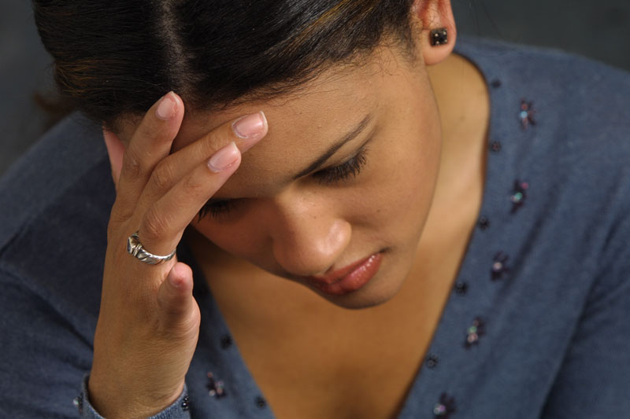

Disturbed Behaviour
Disturbed Behaviour
Disturbed behaviour may be due to mental illness, or it may be due to a temporary emotional disturbance. Generally, disturbed behaviour may be classified as follows:
Psychosis is a mental illness where the person loses touch with reality. Some forms are well known, with schizophrenia, bipolar disorder, and paranoia, being the most commonly associated forms.
Neurosis is usually a chronic condition where the person remains in touch with reality. The person may have an uncontrollable compunction to act in a particular way, with phobias (fears), obsessions and compulsions the most common neuroses. Anorexia nervosa and excessive anxiety are examples of neurosis.
Transient Aberrant Behaviour is a minor condition of temporary mental instability due to a particular emotional or physiological condition. Premenstrual tension, post-natal depression, inappropriate reactions to emotional stress, are all common aberrant behaviour conditions which last only temporarily.
It is important to remember that mental illness is just that; an illness. Similar to other illnesses like diabetes and heart disease, mental illness has a regimen of treatment that is designed to ease the symptoms. The mentally ill person, when exhibiting symptoms, cannot help doing or saying things which, to others, appears bizarre and sometimes hurtful. Mental illness is a frightening and debilitating condition, and those who suffer it deserve our help and understanding, not our pity. Sufferers may also mask their symptoms.
It is also important to note that people with a psychosis or neurosis don’t always exhibit symptoms (they are not ‘constantly ill’). They are often active, creative and contributing members of society indistinguishable from other bystanders while medication, counselling and their own positive attitude help them cope. An estimated 20% of the population has some form of ‘mental illness’.
Psychosis
Psychosis is where the psychotic individual is withdrawn from the world that you and I know, and, from the depths of illness, will perceive things differently. If a schizophrenic tells you that they are hearing voices telling them to do certain things, then those voices are real to them!

Signs and Symptoms
 mood swings
mood swings
 irrational behaviour and inattention
irrational behaviour and inattention
 disjointed speech patterns
disjointed speech patterns
 may refer to religious figures, or to intelligence services (CIA, ASIO, MI5)
may refer to religious figures, or to intelligence services (CIA, ASIO, MI5)
 inappropriate conversation and accusations
inappropriate conversation and accusations
 deep depression, crying
deep depression, crying
 manic behaviour
manic behaviour
 known history and taking medication
known history and taking medication
 the person may inform you that they suffer from mental illness
the person may inform you that they suffer from mental illness

Care and Treatment
 LISTEN to what is said – remain objective
LISTEN to what is said – remain objective
 look, but don’t stare, at the person when talking
look, but don’t stare, at the person when talking
 ask ‘open ended’ questions like, ‘Why do you think that?’
ask ‘open ended’ questions like, ‘Why do you think that?’
 avoid platitudes; eg ‘You will be all right!’
avoid platitudes; eg ‘You will be all right!’
 keep your voice calm – never shout (they may be confused, but not deaf ). A calm demeanour helps encourage calmness in the affected individual
keep your voice calm – never shout (they may be confused, but not deaf ). A calm demeanour helps encourage calmness in the affected individual
 always be polite, no matter what provocation is offered
always be polite, no matter what provocation is offered
 don’t make sudden moves the person may misconstrue as a threatening gesture
don’t make sudden moves the person may misconstrue as a threatening gesture
 never laugh AT the person, and don’t tell them YOUR troubles
never laugh AT the person, and don’t tell them YOUR troubles
 if a potentially violent situation is present, don’t get between the psychotic person and the door
if a potentially violent situation is present, don’t get between the psychotic person and the door
 never get into a physical confrontation as you may get hurt
never get into a physical confrontation as you may get hurt
 ask the person if they want help; eg ‘Is there anyone you would like to see or talk to?’
ask the person if they want help; eg ‘Is there anyone you would like to see or talk to?’
 give them any assistance you can, but don’t make promises you can’t keep
give them any assistance you can, but don’t make promises you can’t keep
 don’t delay in a potentially violent situation and cause risk to the person, to yourself, or to others – GET HELP
don’t delay in a potentially violent situation and cause risk to the person, to yourself, or to others – GET HELP
Neurotic Behaviour
Neurotic Behaviour is a chronic condition, and the first aid provider is more likely to be called on to attend the ‘by products’ of the illness, such as the wounds of a person who self-mutilates, or a person who attempts or threatens suicide as a plea for help.
If called on to assist in a case like this, treat any injuries objectively – don’t comment on the cause. Be sympathetic and provide support as required. Above all, be a good listener! In conversation, the same rules apply as for conversation with a psychotic.
Transient Aberrant Behaviour
Transient Aberrant Behaviour is a temporary condition, but no less serious. Severe emotional and physiological stress puts intolerable pressure on the affected person, and the resultant outburst has the potential to be violent. Recognition of the onset of stress likely to cause aberrant behaviour is the key to caring for a potential sufferer.

Signs and Symptoms
 history of recent emotionally, or physiologically, stressful situation
history of recent emotionally, or physiologically, stressful situation
 personality – does the person usually cope easily with stress?
personality – does the person usually cope easily with stress?
 mood swings, emotional outbursts
mood swings, emotional outbursts
 depression – indifference towards relatives, friends
depression – indifference towards relatives, friends
 deterioration in personal appearance
deterioration in personal appearance
 increased inattention to family/children
increased inattention to family/children
Care for a person presenting with these signs and symptoms is initially support and understanding. Remember that this is a temporary condition, and that this event is not ‘the real individual’. Treatment for the condition is referral to professional psychological help. It may be difficult to persuade the sufferer to attend psychological counselling, but if all else fails, refer them to their own, or a trusted, doctor. Prior to any appointment, contact the doctor and relay your observations. The doctor will appreciate your concern.